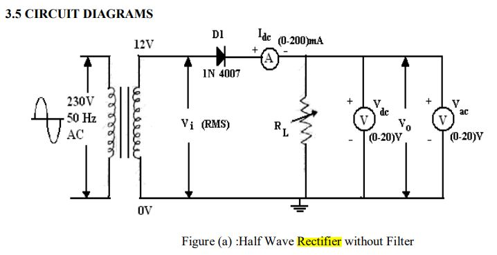
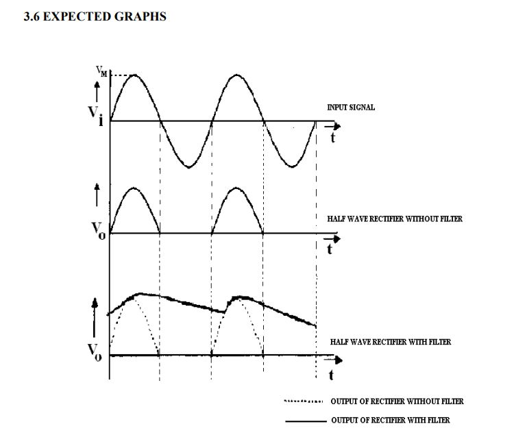
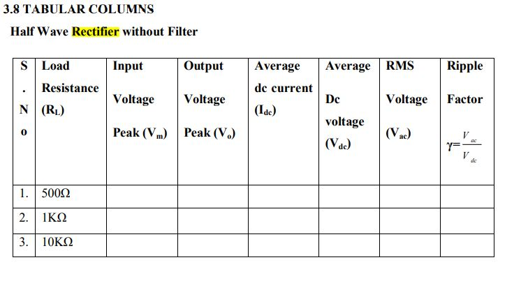

<!DOCTYPE html>
<html>
<head>


	 <meta charset="utf-8">
	  <meta name="viewport" content="width=device-width, initial-scale=1">
  <link rel="stylesheet" href="style.css">
   <link href="https://fonts.googleapis.com/css2?family=Poppins:wght@400;600;700;900&display=swap" rel="stylesheet">
    <link rel="stylesheet" href="style1.css">
 
  <style>
    #header{
    background-color:grey;
    height: 160px;
    text-align: center;
    padding-top: 6px;
    margin-bottom: -20px;
  }

  #navigation{
    line-height: 70px;
    background-color: grey;
    width: 280px;
        float: left;
      padding: 5px;
        height: 3000px;

  }
  #main1{
    
    background-color:white;
    height: 3000px;
    overflow: scroll;
    overflow-x: scroll;
    overflow-y: scroll; 

      
  }
     video { margin-left: 40vw; transform: translate(-50%); }
  	#tab {
  font-family: Arial, Helvetica, sans-serif;
  border-collapse: collapse;
  width: 70%;
}

#tab td, #customers th {
  border: 1px solid #ddd;
  padding: 8px;
}

#tab tr:nth-child(even){background-color: #f2f2f2;}

#tab tr:hover {background-color: #ddd;}

#tab th {
  padding-top: 12px;
  padding-bottom: 12px;
  text-align: left;
  background-color: #04AA6D;
  color: white;
}

  	body {
  background: #555;
}
h1   {
	background:black;
	font-size:40px;
	color: white;
	text-align:center;
	padding: 20px;
}
.content {
  max-width: 1300px;
  margin: auto;
  background: white;
  padding: 10px;
}
 .button {
  background-color: grey; /* Green */
  border: none;
  color: white;
  padding: 16px 32px;
  text-align: center;
  text-decoration: none;
  display: inline-block;
  font-size: 16px;
  margin: 4px 2px;
  transition-duration: 0.4s;
  cursor: pointer;
 z-index:10;
}
p{
  color:white;
}
button {
  background-color: black; /* Green */
  border: none;
  color: white;
  padding: 16px 32px;
  text-align: center;
  text-decoration: none;
  display: inline-block;
  font-size: 16px;
  margin: 4px 2px;
  transition-duration: 0.4s;
  cursor: pointer;
  margin:3px 3px 3px 3px;
}
a{
  color:black;
}
.button button:hover {background-color: grey}
.button:hover {
  background-color: #4CAF50;
  color: white;
}
.simulator button:hover {background-color: red}
a:hover {background-color: red}
img {
  border-radius: 8px;
}
.topleft {
  position: absolute;
  top: 8px;
  left: 16px;
  font-size: 18px;
} 
     
</style>

<script src="https://ajax.googleapis.com/ajax/libs/jquery/3.5.1/jquery.min.js"></script>

</head>
<body>
 <div id="header">
   <div class="topleft">
        <a href="home1.html"></a>

        <p>home</p>
       </div>
	<div class="content">
   
		 <h1 style="text-align:center;">Half wave Rectifier</h1>
    </div>
    <div id="navigation">
	<div class="wrapper">
	 
      </div>
<div class="button" >
  
 <a href="ece_labs_list.html"> <button >EDC-1</button></a><br>
<button id="area1">Introduction</button><br>
<button id="area2">Theory</button><br>
<button id="area3">objective</button><br>
<button id="area4">procedure</button><br>
<button id="area5" onclick="myfunction()">simulator</button><br>
<button id="area6">quiz</button><br>
<button id="area7">references</button><br>
</div>
</div>
<div id="main">
<section id="1">
	<h2>Introduction</h2>
      <p style="font-size:20px"><b>About the Experiment</b></p>
      <p>This experiment enables a student to learn<br><br>
Students are able to
Examine the input and output waveforms of a half wave rectifier.<br>
Calculate the ripple factor with load resistance of 500Ω, 1 KΩ and 10 KΩ respectively.<br>
Calculate ripple factor with a filter capacitor of 100F and the load of 1K, 2K and 10KΩ 
respectively
________________________________________
<br>
</p>

</section>
<section id="2" style="display: none;"><H2>THEORY</H2>
<p>During positive half-cycle of the input voltage, the diode D1 is in forward bias and conducts 
through the load resistor R1. Hence the current produces an output voltage across the load 
resistor R1, which has the same shape as the +ve half cycle of the input voltage.
During the negative half-cycle of the input voltage, the diode is reverse biased and there is no 
current through the circuit. i.e, the voltage across R1 is zero. The net result is that only the +ve 
half cycle of the input voltage appears across the load. The average value of the half wave 
rectified o/p voltage is the value measured on dc voltmeter.<br>
For practical circuits, transformer coupling is usually provided for two reasons.<br>
1. The voltage can be stepped-up or stepped-down, as needed.<br>
2. The ac source is electrically isolated from the rectifier. Thus preventing shock hazards 
in the secondary circuit.</p>


</section>

<section id="3" style="display: none;">
	
	<H2>AIM:-</H2><p>Examine the input and output waveforms of a half wave rectifier.<br>
Calculate the ripple factor with load resistance of 500Ω, 1 KΩ and 10 KΩ respectively.<br>
Calculate ripple factor with a filter capacitor of 100F and the load of 1K, 2K and 10KΩ 
respectively</p>
</section>
<section id="4" style="display: none;"><H2>CIRCUIT</H2>	

<h2>components required</h2>
<table id="tab">
  <tr>
    <th>S.no</th>
    <th>device</th> 
    <th>range</th>
    <th>quantity</th>
  </tr>
  <tr>
    <td>1</td>
    <td>Rectifier and Filter trainer Board 
Containing<br>
a) AC Supply.<br>
b) Silicon Diodes<br> 
c) Capacito</td>
<td><br><br>(9-0-9) V<br>
1N 4007<br>
0.47μF<br></td>
    <td>ONE each </a></td>
    
  </tr>
  <tr>
    <td>2</td>
    <td>DC Voltmeter<br>
DC Voltmeter</td>
<td>(0-1) V<br>
(0-20) V</td>
    <td>ONE EACH</td>
    
  </tr>
  <tr>
    <td>3</td>
    <td>DC Ammeter<br>
DC Ammeter<br></td>
<td>(0-200) μA<br>
(0-20) mA</td>
    <td>TWO</td>

  </tr>
  <tr>
    <td>4</td>
    <td>Connecting wires</td>
    <td>5A</td>
    <td>TEN</td>
    
  </tr>
  <tr>
    <td>5</td>
    <td>Cathode Ray Oscilloscope</td>
    <td>0-20MHZ</td>
    <td>ONE</td>
  </tr>
<tr>
    <td>6</td>
    <td>Decade Resistance Box</td>
    <td>10-100 k OHM</td>
    <td>ONE</td>
  </tr>
</table>
<H2>PROCEDURE</H2>
<p>
	Half Wave Rectifier without filter
1. Connect the circuit as shown in figure (a).<br>
2. Adjust the load resistance, RL to 500Ω, and note down the readings of input and output 
voltages through oscilloscope.<br>
3. Note the readings of dc current, dc voltage and ac voltage.<br>
4. Now, change the resistance the load resistance, RL to 1 KΩ and repeat the procedure as 
above. Also repeat for 10 KΩ.<br>
5. Readings are tabulated as per the tabular column<br>

</p>

<h3>Observation Tables:</h3>

<h2>Results</h2>
<p>
1. Input and Output waveforms of a half-wave are observed and plotted.<br>
2. For Half-wave rectifier without filterγ, Ripple factor at 500Ω=<br>
 1KΩ=<br>
 10 KΩ=<br>
</p>
</section>
<section id="5" style="display: none;"><h2>simulator</h2>
	<h2>Tutorial link for experiment:</h2>
<p>refer this vedio for simulation</p>
<video width="620" height="640" poster="ece_dept.jpg" controls style="float:right">
  <source src="diode_Demo.mp4" type="video/mp4">
    <source src="movie.ogg" type="video/ogg">
  
  Your browser does not support the video tag.
</video>

<h2>Simulator </h2>
<p>name:<b>MULTISIM</b></p>
<div class="simulator">
<button onclick="myFunction()">Multisim Download</button>
</div>
<p><b> installation details</b><a href=" https://knowledge.ni.com/KnowledgeArticleDetails?id=kA03q000000YH77CAG&l=en-US">click here</a></p>
</section>
<section id="6" style="display: none;"><h2> take quiz</h2>
<a href="qd.html" style="color:black">attempt quiz</a>
</section>
<section id="7" style="display: none;">
	<h2>references</h2><p>
	1.The Art of Electronics
Textbook by Paul Horowitz and Winfield Hill<br>
     2. Electronic Devices and Circuits
Book by Franz J. Monssen, Louis Nashelsky, and Robert Boylestad<br>
3.<b>youtube lecture</b>: <a href="https://www.youtube.com/watch?v=L6BZEJ4wH4I">click here</a> <br> </p>                     
</section>
</div>

<script>
	function myFunction() {
  
window.open("https://www.filehorse.com/download-multisim/download/", "_blank", "toolbar=yes,scrollbars=yes,resizable=yes,top=700,left=700,width=600,height=500");
}
$(document).ready(function(){
  $("#area1").click(function(){
    $("#1").show();
    $("#2").hide();
     $("#3").hide();
      $("#4").hide();
       $("#5").hide();
        $("#6").hide();
         $("#7").hide();

  });
  $("#area2").click(function(){
    $("#1").hide();
    $("#2").show();
     $("#3").hide();
      $("#4").hide();
       $("#5").hide();
        $("#6").hide();
         $("#7").hide();

  });
  $("#area3").click(function(){
    $("#1").hide();
    $("#2").hide();
     $("#3").show();
      $("#4").hide();
       $("#5").hide();
        $("#6").hide();
         $("#7").hide();

  });
  $("#area4").click(function(){
    $("#1").hide();
    $("#2").hide();
     $("#3").hide();
      $("#4").show();
       $("#5").hide();
        $("#6").hide();
         $("#7").hide();

  });
  $("#area5").click(function(){
    $("#1").hide();
    $("#2").hide();
     $("#3").hide();
      $("#4").hide();
       $("#5").show();
        $("#6").hide();
         $("#7").hide();

  });
  $("#area6").click(function(){
    $("#1").hide();
    $("#2").hide();
     $("#3").hide();
      $("#4").hide();
       $("#5").hide();
        $("#6").show();
         $("#7").hide();

  });
  $("#area7").click(function(){
    $("#1").hide();
    $("#2").hide();
     $("#3").hide();
      $("#4").hide();
       $("#5").hide();
        $("#6").hide();
         $("#7").show();

  });
});
</script>
</div>
</body>
</html>
